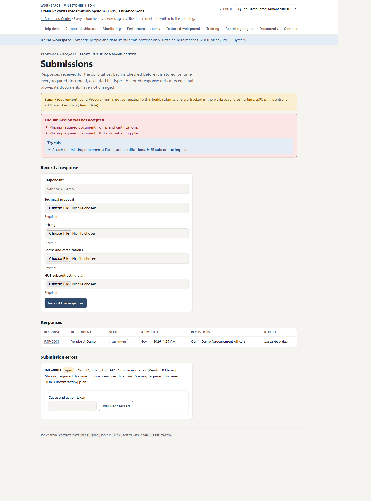
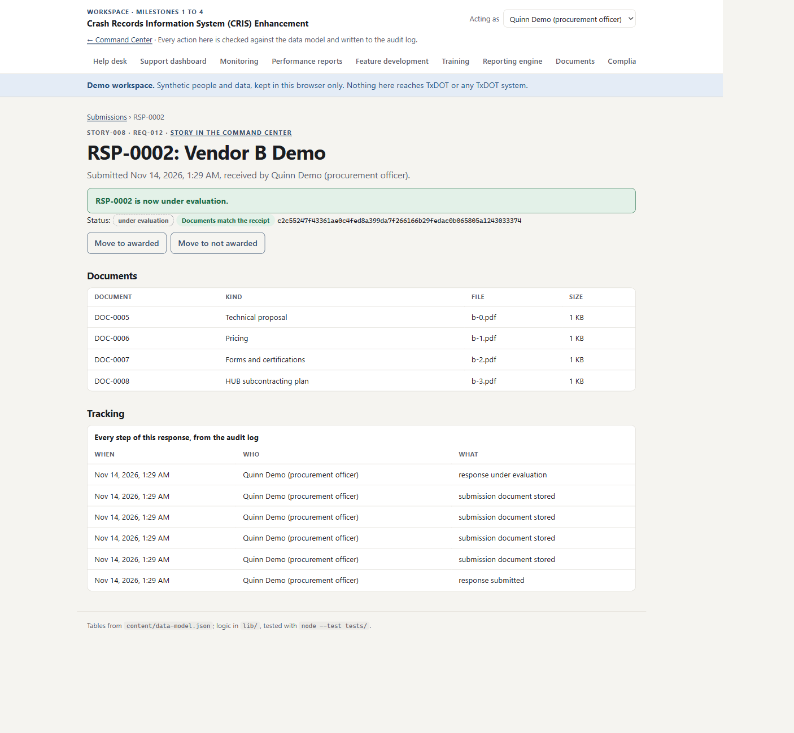
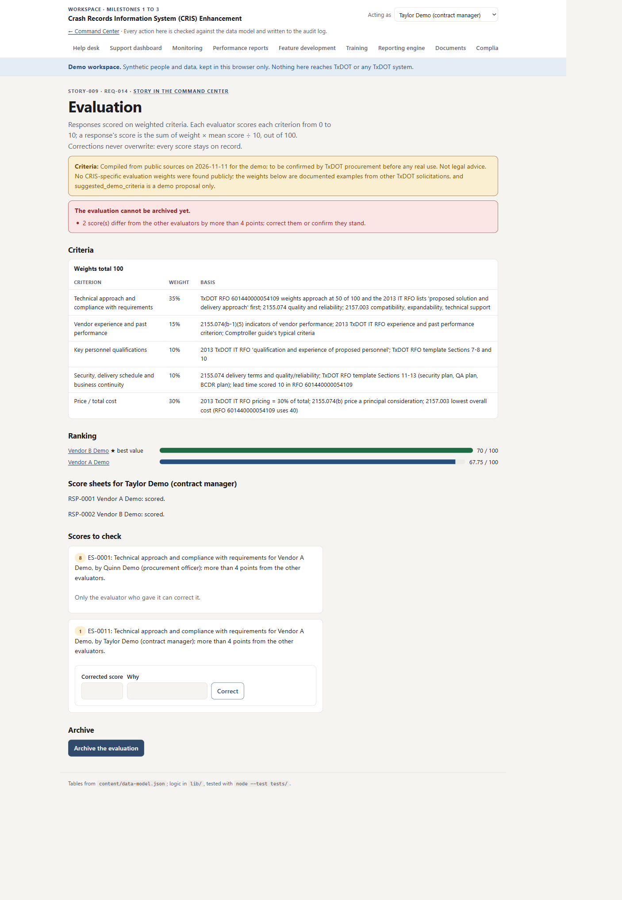
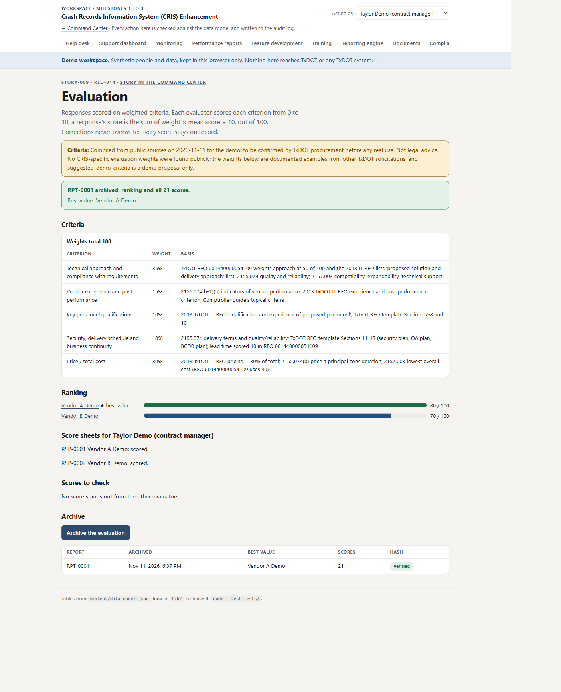
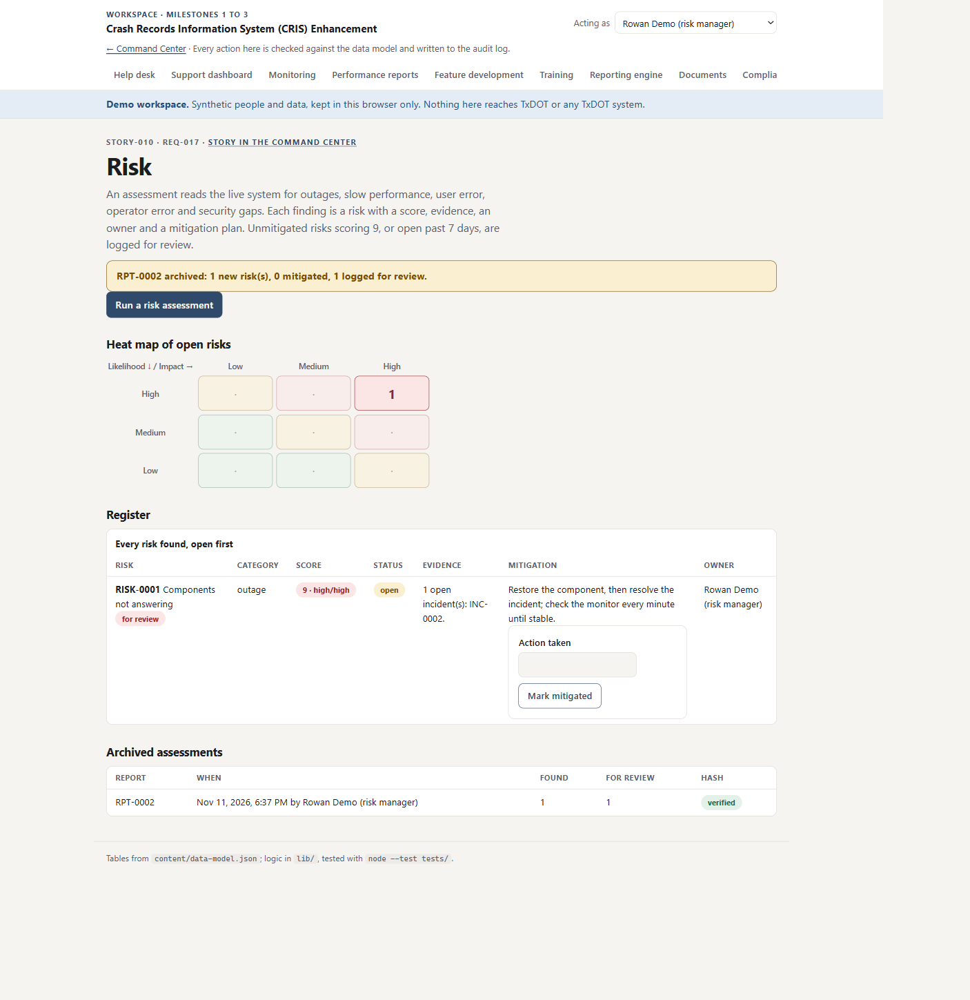
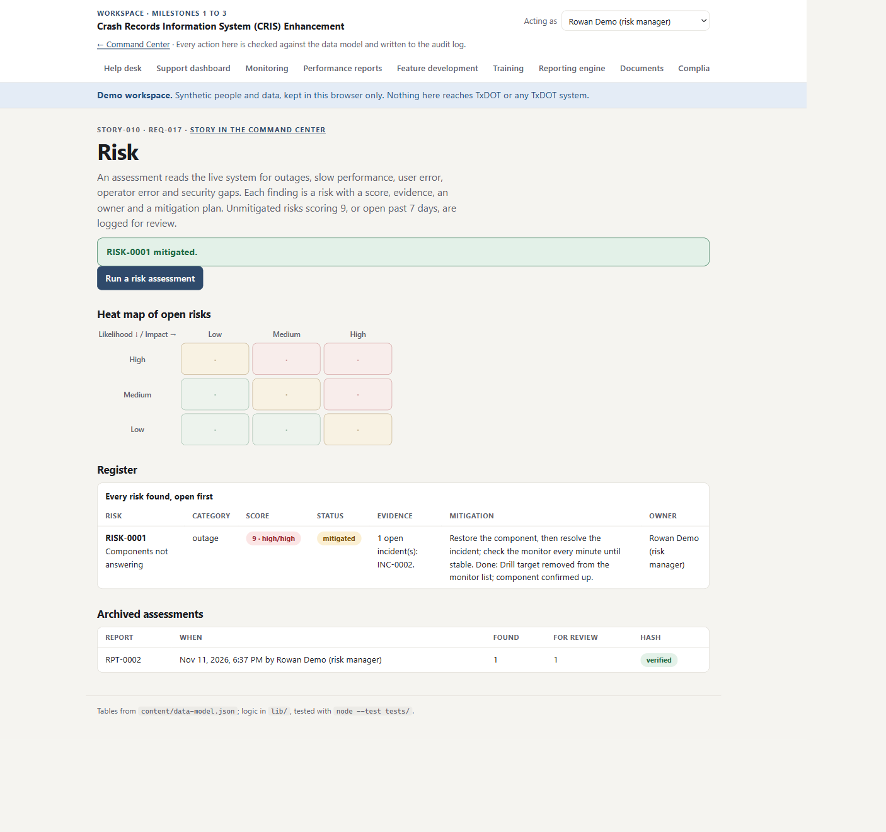

Colaberry · TxDOT solicitation · ship-by 24 November 2026
The Crash Records Information System Service Agreement build: 20 requirements, 15 stories in five releases, and a Command Center that shows only what the project has produced.
Built and demonstrated on synthetic data. Nothing here is operating in production, and nothing is connected to a TxDOT system.
gh is no longer needed.plan.json holds none, so the Command Center shows none. The first sync after connecting may deliver them.Dates as the story brief gives them. Releases 0, 1 and 2 are complete on 11 November, ahead of Release 2's dates; Releases 3 and 4 remain.
VerifiedNot started
| Release | Stories | Dates in the brief | Status |
|---|---|---|---|
| first | STORY-000 Build your Command Center | Before anything else | Verified 11 Nov by the portal, 50 points. Live on GitHub Pages |
| r0 | 001 Help Desk Support Module · 002 System Monitoring Tools · 003 Performance Reports · 012 Ongoing Technical Support and Maintenance | 5 to 8 Nov | Verified 11 Nov, all four, 50 points each |
| r1 | 004 Feature Development Module · 005 User Training Sessions | 10 to 12 Nov | Verified 11 Nov, both |
| r2 | 006 Reporting Engine · 007 Compliance with Laws · 013 Required Documentation | 13 to 16 Nov | Verified 11 Nov, all three, through the push webhook |
| r3 | 008 Response Submissions · 009 Evaluate and Score Responses | 18 to 20 Nov | Verified 12 Nov, both |
| r4 | 010 Risk Assessment Tools · 011 Cybersecurity Compliance · 014 Performance and User-Error Risks · 015 Incident Reports and Risk Documentation | 21 to 24 Nov | 1 of 4 010 verified 12 Nov; 011, 014, 015 in Milestone 4 |
All three verified by the portal on 12 November through the push webhook, each against the commit that names it. Milestones 1 and 2 were verified on 11 November.
| Story | What passes | Proof |
|---|---|---|
| 008 Submissions | A response is checked first (closing time, all four required documents, file types), stored with its documents and a SHA-256 receipt; a failed submission is logged and addressed; every step tracked | Verified 3d3dacd · 4 tests + walk |
| 009 Evaluation | Five weighted criteria total 100; weighted score tested against hand calculation; an out-of-line score is flagged and corrected without overwriting; ranking and every score archived | Verified 54ec087 · 4 tests + walk |
| 010 Risk | Six live conditions assessed; each risk scored with evidence, owner and mitigation; mitigated when the condition is gone or the action is recorded; score 9 or overdue logged for review; assessments archived | Verified 5cbf603 · 4 tests + walk |
Three to five stories at a time. Each ends with a summary, links, everything pushed, this framework updated with new screenshots, and a short HTML presentation with charts and a story line.
| Milestone | Contents | Target |
|---|---|---|
| M0 | STORY-000: the Command Center, all nine tabs, verified by the portal | Done 11 Nov |
| M1 | STORY-001, 002, 003, 012 and 004: the workspace | Done 11 Nov |
| M2 | STORY-005, 006, 013 and 007: training, reporting engine, documents, compliance | Done 11 Nov |
| M3 | STORY-008, 009 and 010: submissions, evaluation, risk | Done 12 Nov |
| M4 | STORY-011, 014, 015, then demo prep | 24 Nov · next |
| Date | Decision | By |
|---|---|---|
| 2026-11-08 | SSS is finished; move to Crash Records, the live solicitation, ship-by 24 Nov. STORY-000 first, then the Release 0 stories in order | Ali |
| 2026-11-10 | The repo lives under Obi's own GitHub account and is public, as the portal requires for verification and GitHub Pages. It is separate from the closed SSS repo | Obi |
| 2026-11-10 | The Command Center is a static site with no dependencies, read from the .colaberry/ files at runtime through one data layer | Claude |
| 2026-11-10 | The page shows what the plan file holds. The brief's dates are not typed into the code; the missing dates are an empty state that says so | Claude |
| 2026-11-10 | Neutral colours until a brand is chosen; the brand is two lines at the top of the stylesheet | Claude |
| 2026-11-10 | Milestones of three to five stories, each ending with an HTML presentation of three to five minutes | Obi |
| 2026-11-10 | Every framework, artifact and presentation carries a red "Take the guided tour" button; a play icon added to it on 11 Nov | Obi |
| 2026-11-11 | Repo created as OBIANAMS04/cris-enhancement (public), connected to the portal, and published with GitHub Pages | Obi |
| 2026-11-11 | The portal's progress record is committed unedited, since the portal can read the repo but not write to it | Claude |
| 2026-11-11 | The 18 proposed tables are created as proposed, with no changes; AuditEntry and MaintenanceWindow added because the M1 stories need them | Obi |
| 2026-11-11 | The workspace runs in the browser with a localStorage store and synthetic people, so the public site demonstrates every story with nothing reaching TxDOT | Claude |
| 2026-11-11 | Every write is saved together with a hash-chained audit line or not at all; events, samples and reports are append-only | Claude |
| 2026-11-11 | Service levels and service hours are proposals in one file, marked as such on screen, until TxDOT confirms them | Claude |
| 2026-11-11 | No Basecamp ticket for CRIS: milestone updates go through the portal, as Ali indicated | Ali |
| 2026-11-11 | Push webhook registered from GitHub's settings page, so gh is not needed | Obi |
| 2026-11-11 | Every guided tour has a male voice narrator; each milestone runs one to three background agents, shown as notifications in the chat | Obi |
| 2026-11-11 | Training counts only when the knowledge check is passed (80%), and a session cannot be held without a recording | Claude |
| 2026-11-11 | Report errors are logged as incidents on the reporting engine and addressed by a successful retry or by hand with the cause | Claude |
| 2026-11-11 | A compliance rule whose records the build does not hold is "not applicable" with that reason, never a pass; the register must be confirmed by TxDOT legal | Claude |
| Risk | Action |
|---|---|
| 6 stories in the 13 days to 24 Nov | Releases 0 to 2 done on 11 Nov; milestones of three and three stories remain |
| The compliance register is compiled from public sources | Labelled on the page as not legal advice; TxDOT legal to confirm before any real use |
| The workspace store is per browser, so two people do not share tickets yet | Said on screen; a shared backend replaces lib/store.js's backend without touching the stories' logic |
| The stories name integrations this project cannot reach: TxDOT IT infrastructure and financial systems, Euna Procurement, incident management | Build against labelled synthetic stand-ins behind a clear interface; every indicator stays grey and "not checked from here" until a real system reports |
| Some requirements read as the delivered CRIS service and others as handling the solicitation response itself (REQ-012 to 015) | Follow the story files as written; raise mismatches with Ali |
| The repo is public | No secrets, keys or .env files; the push-webhook secret is run once and never saved |





